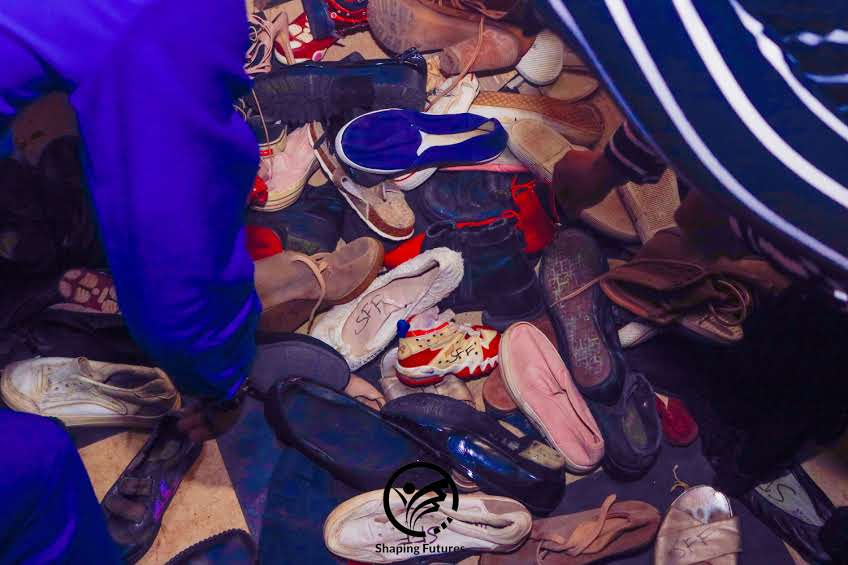
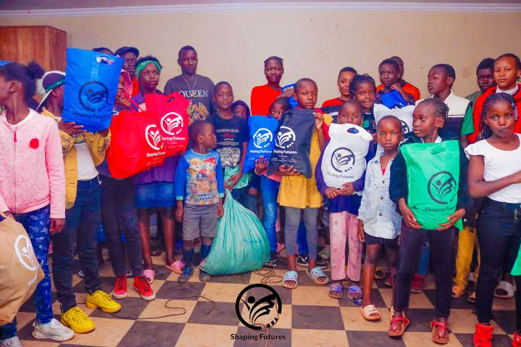
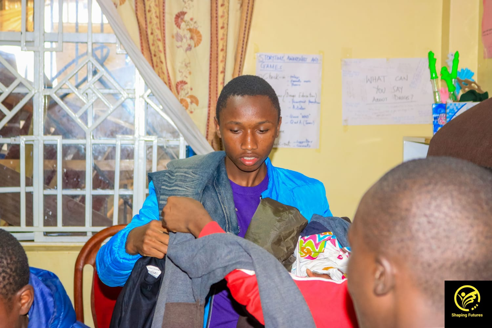
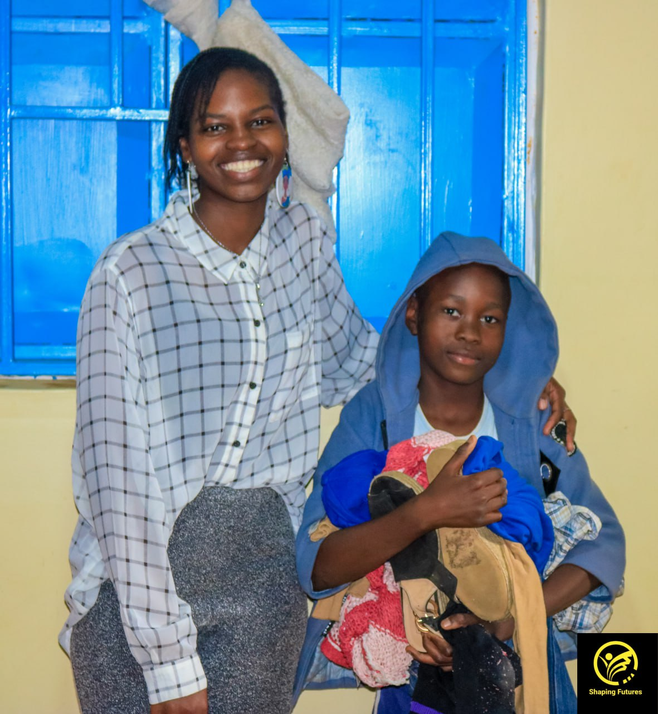
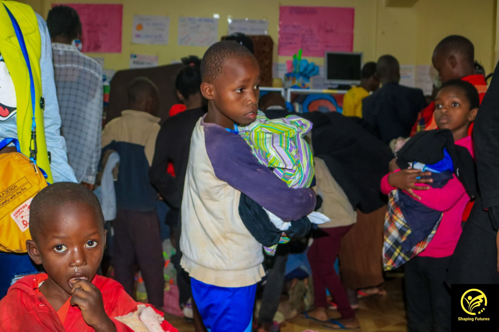

Clothes Donation Program
We collect and distribute clothes to those in need. Our clothes donation program aims to support families and individuals in difficult circumstances. By donating gently used clothes, you can help bring comfort and dignity to those in need.






How to Donate
- Sort your clothes and select items in good condition.
- Drop off at our designated locations or schedule a pick-up.
- Receive a thank-you note and see the impact of your donation.